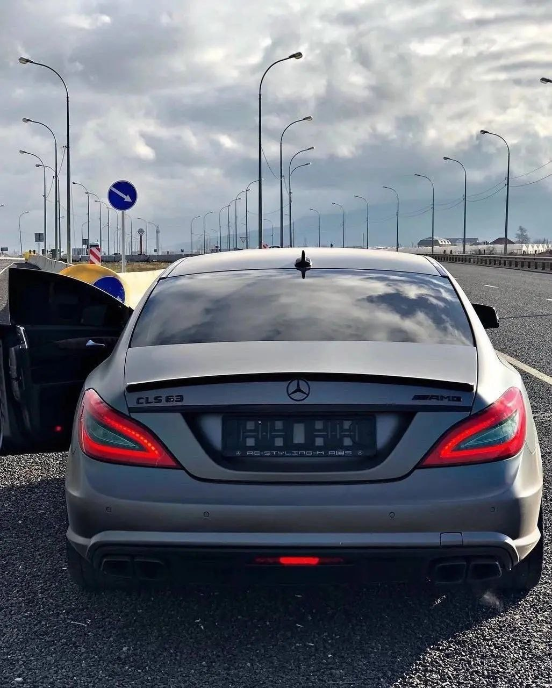

тут вообще не интересно. я бы даже читать не советовал. кроме машин хобби нет, ну так совпало (да даже не совпало, чет с детсва так идёт хорошо). больше у меня хобби нет, бывает чем то занимаюсь и как-то пропадает интерес.
